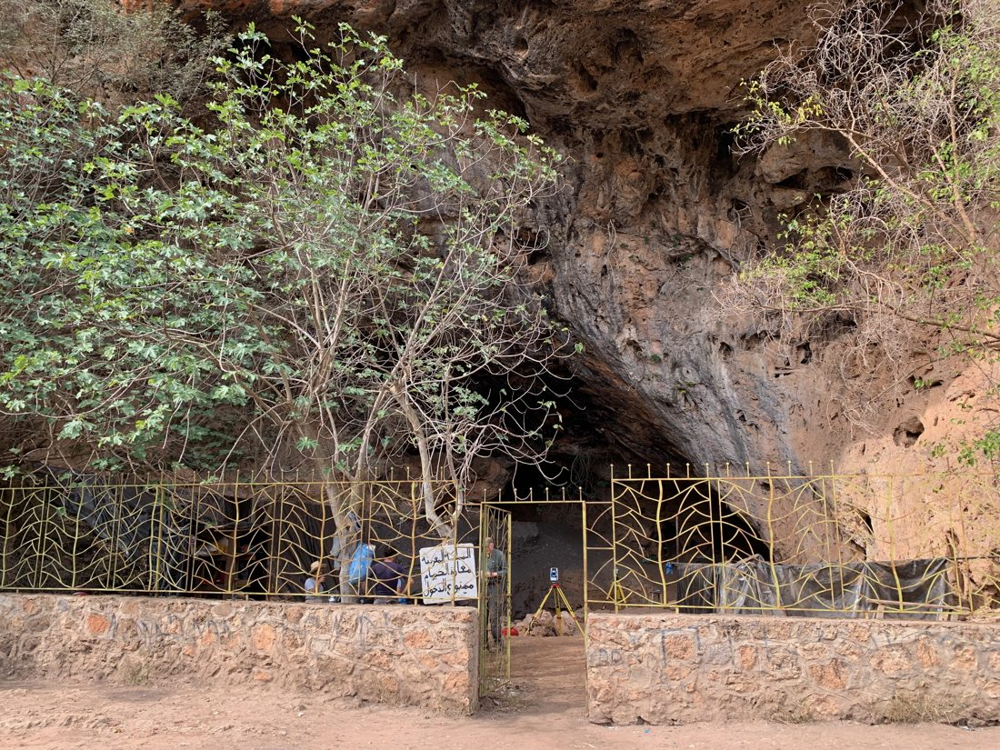
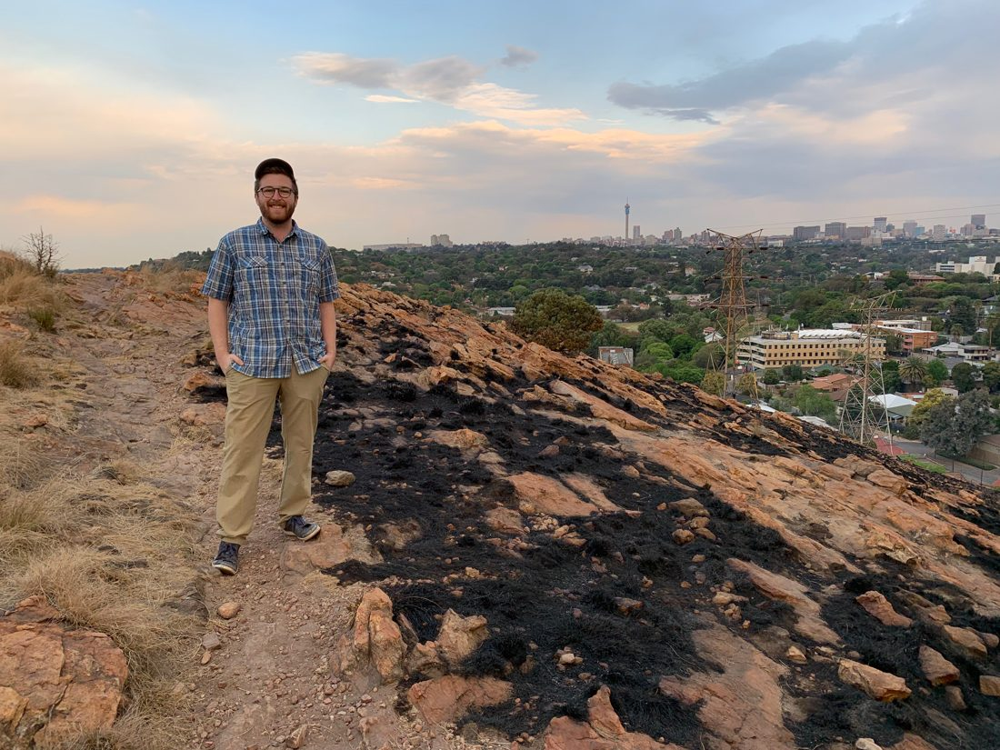
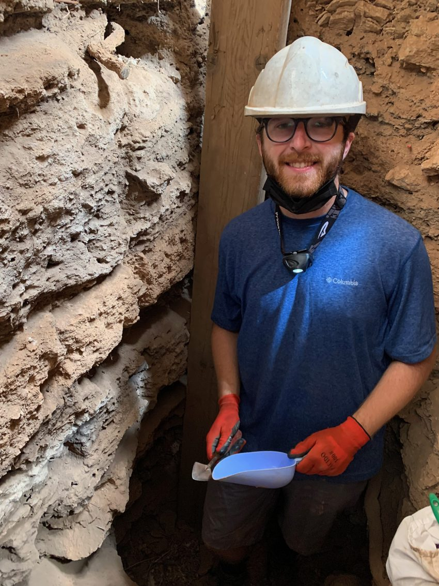
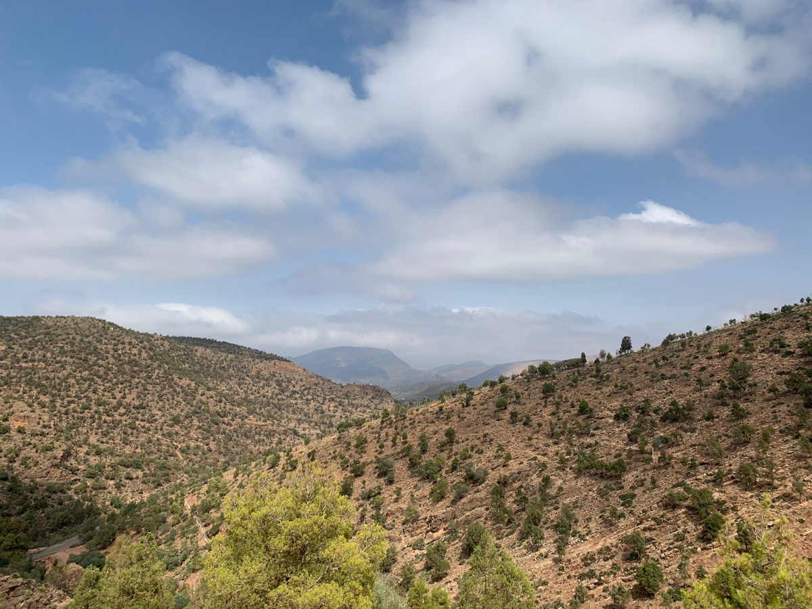
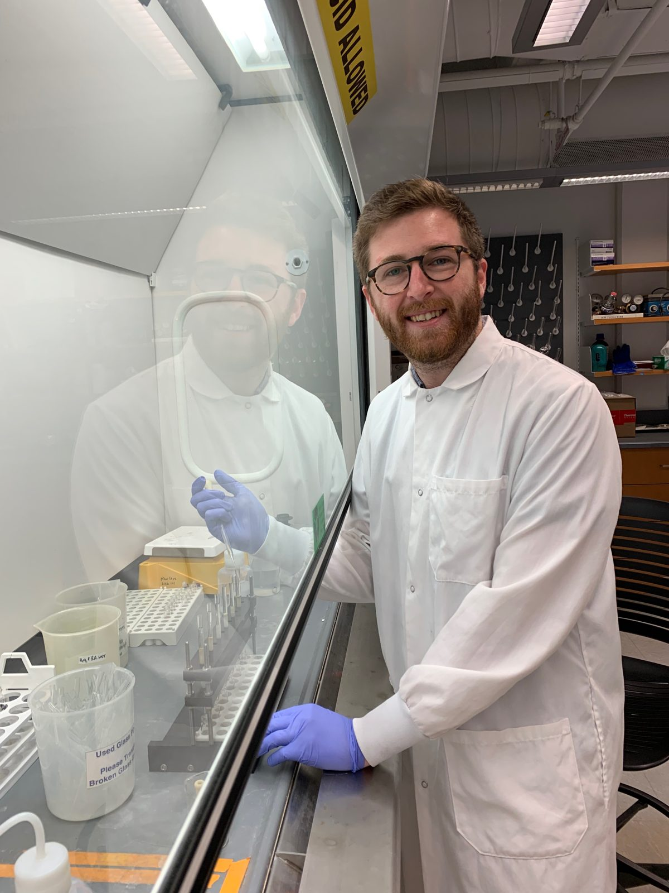
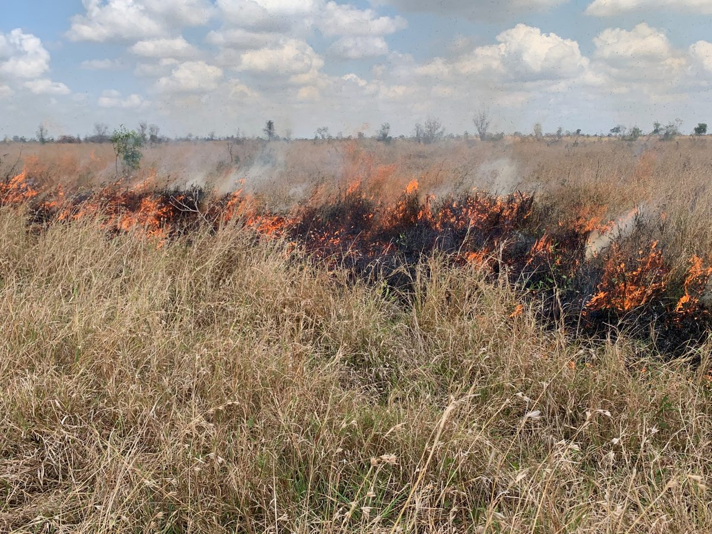
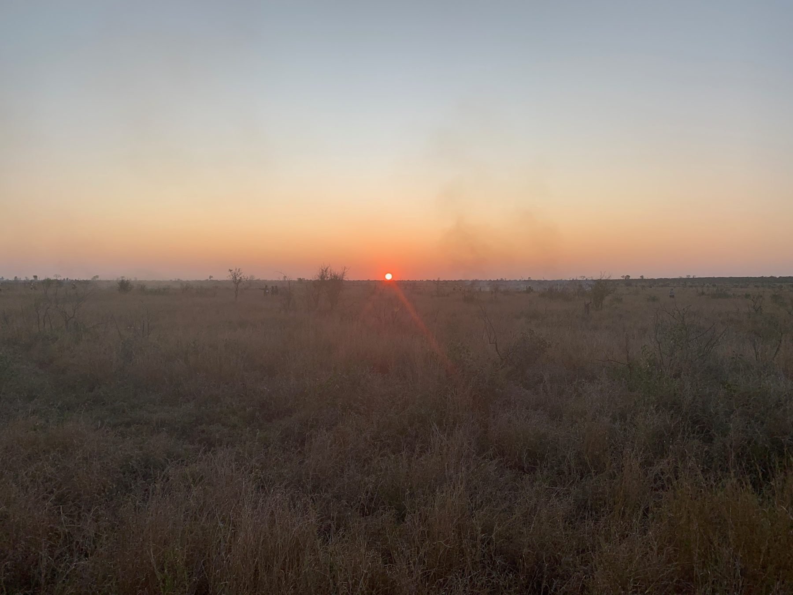

Fieldwork
In the field

Taforalt Cave (Grotte des Pigeons), Morocco · 2023
Assisted an archaeological excavation in the Middle Atlas Mountains — a cave periodically occupied by hunter-gatherer groups through the late Pleistocene and Holocene — collecting samples as the project's organic geochemist to link paleoclimate and paleofire reconstructions with the archaeological record.

Kruger National Park, South Africa · 2022
Took part in a savanna burn experiment investigating how weather and fuel conditions control fire behavior, co-leading the charcoal-collection effort to study how burn conditions shape charcoal production and dispersal — ground-truthing the proxies behind my paleofire records.
Field gallery





